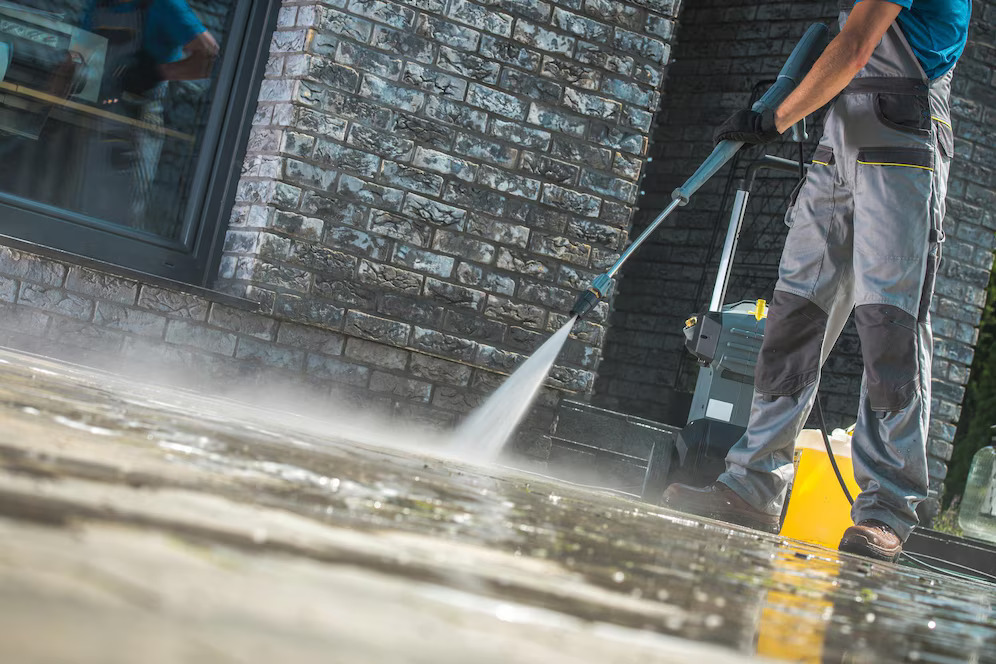

Potomac Valet Trash
Potomac Valet Trash
Text or Call: 703-568-9373
Doorstep trash pickup on scheduled nights—keeping hallways and walkways cleaner with less strain on your onsite team.
Potomac Valet Trash provides reliable doorstep trash collection for multi-family properties. Residents place properly bagged trash outside their door during a designated pickup window, and our team collects it and transports it to the property’s dumpsters or compactor area.
Valet trash helps reduce loose trash in common areas, improves property appearance, and gives maintenance teams time back for higher-priority work. We align to your community rules (pickup times, bag limits, and cleanliness standards) to ensure a smooth, consistent service.
Whether you have multiple buildings, stairwells, or walk-up units, we tailor the route and process to fit your layout—without disrupting residents.
Want a quick quote and rollout plan for your property?
Request a Quote